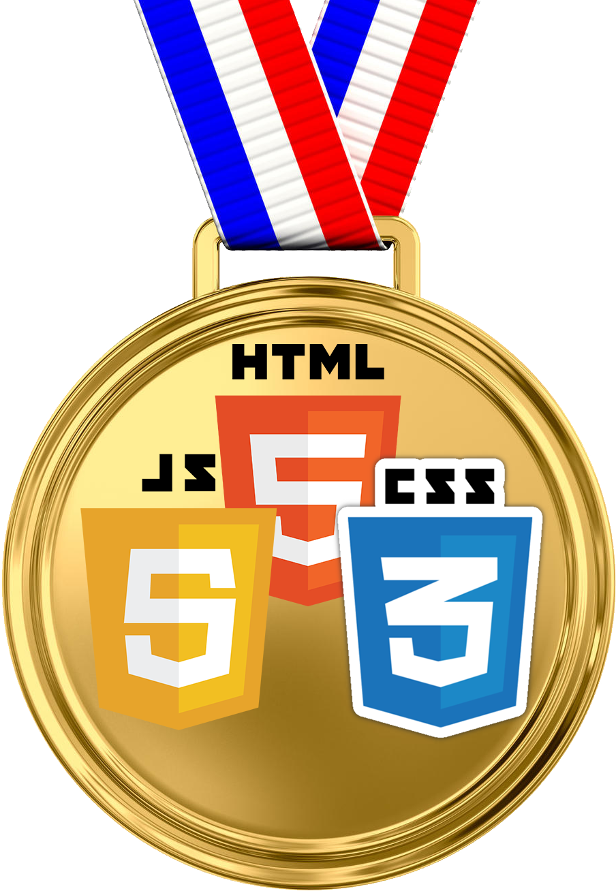
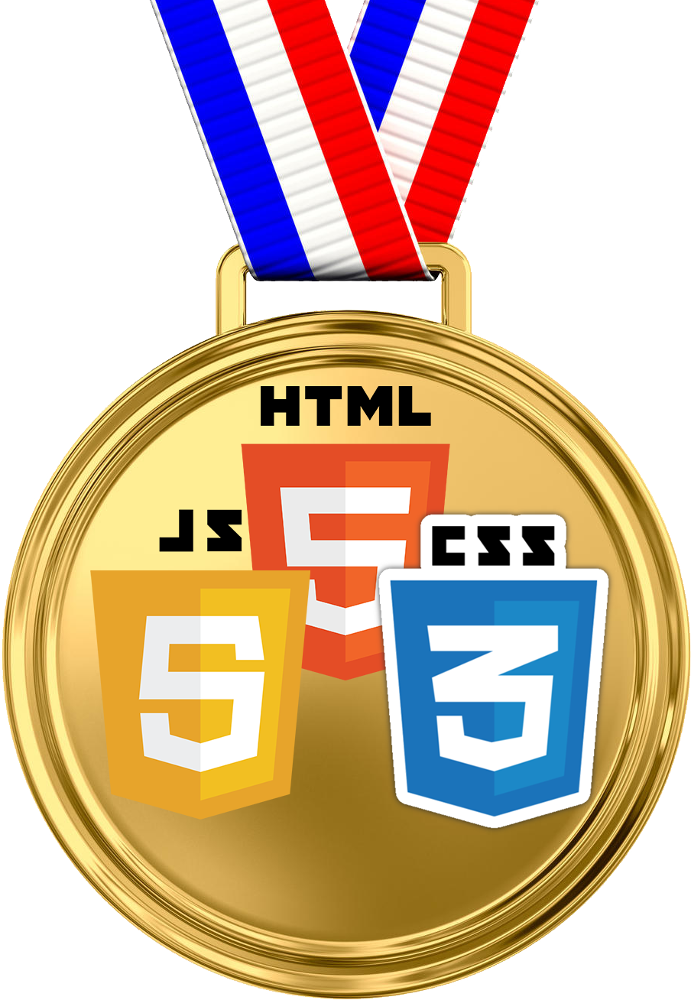

Обучение фронтэнд-разработке.
Фронтенд (англ. front-end) — клиентская сторона пользовательского интерфейса к программно-аппаратной части сервиса.
Бэкенд (англ. back-end) — программно-аппаратная часть сервиса. Бэкенд отвечает за осуществление функционирование внутренней части веб-сайта.
БЕСПЛАТНЫЙ курс по верстке сайтов от Жеки Фрилансер по жизни (Front End)
HTML5 и CSS3
Развернуть
Канал на ютуб | Плей лист с уроками по верстке
Урок 1. Организация папок. | видео
Урок 2. Строительные теги div, header, footer, nav. | видео
Урок 3. HTML теги для КОНТЕНТА. | видео
Урок 4. HTML теги форм. HTML input. | видео
Урок 5. Обнуление CSS стилей | видео
Урок 6. CSS Стили шрифта и текста. CSS font-size. CSS color, CSS text-shadow. | видео
Урок 7. Свойства блоков. CSS padding. CSS margin. CSS display. | видео
Урок 8. Свойства и стили оформления блоков. CSS opacity. | видео
Урок 9. CSS свойство BACKGROUND. Делаем фон для сайта | видео | Шпаргалка по BACKGROUND | Скачать файл-шпаргалку | htmlbook.ru
Урок 10. CSS псевдоклассы. Псевдокласс HOVER и другие | видео
Урок 11. CSS псевдоэлементы. Псевдоэлементы BEFORE и AFTER. | видео
Урок 12. CSS позиционирование (CSS position). | видео
Урок 13. Препроцессор SASS/SCSS за 38 минут. Что такое SASS, SCSS. Установка уроки обучение. | видео
Урок 14. Подключение шрифтов. Google Fonts. CSS font-face. Как подключить шрифты | видео
Урок 15. Методология БЭМ за 17 минут. Пример верстки по БЭМ методологии | видео
JavaScript
Развернуть
Урок 1.|


 | Что такое JAVASCRIPT? Как работает JS?
Пишем первую программу на JavaScript. |
видео
| Что такое JAVASCRIPT? Как работает JS?
Пишем первую программу на JavaScript. |
видео
Урок 2. |
| Основы синтаксиса JAVASCRIPT. Структура
кода. Инструкции. Режим use strict. |
видео
Урок 3. |
| Переменные в JAVASCRIPT. Константы.
Ключевые слова LET CONST VAR. |
видео
Урок 4. |
| Типы данных JAVASCRIPT. Null String
Undefined Boolean Number и другие. |
видео
Урок 5. |
| Операторы JAVASCRIPT. "2"+2=22. |
видео
Урок 6. |
| IF ELSE в JAVASCRIPT. Условный оператор
"?". Примеры IF ELSE. |
видео
Урок 7. |
| Циклы FOR и WHILE в JavaScript. Директивы
break и continue. |
видео
Урок 8. |
| Функции в JAVASCRIPT. Стрелочные функции,
рекурсия, планирование: setTimeout и setInterval. |
видео
Урок 9. |
| Объекты в JavaScript. Основы для
начинающих. Синтаксис, создание, изменение. |
видео
Урок 10. |
| Числа в JAVASCRIPT. Тип данных number.
Работа с числами. проблема неточных вычислений. |
видео
Урок 11. |
| Строки в JAVASCRIPT. Тип данных string.
Типы кавычек, поиск, регистр и получение подстроки. |
видео
Урок 12. |
| Массивы в JAVASCRIPT. Методы массивов.
Редактирование, поиск, сортировка. |
видео
Урок 13. |
| JavaScript Document object model (DOM)
за час. Изменение HTML CSS. Атрибуты и свойства. Окружение. |
видео
Урок 14. |
| JavaScript размеры прокрутка и
координаты элементов на странице и окна браузера. |
видео
Урок 15. | JAVASCRIPT СОБЫТИЯ. addEventListener делегирование. Cобытия мыши клавиатуры загрузки сайта. Практика | видео
Урок 16. | JAVASCRIPT И ФОРМЫ. Свойства, события, методы. Практические примеры. | видео
Метод обучения:
Для получения глубоких знаний по теме необходимо знакомство с каждым уроком разделить на 5 подходов и разделить эти подходы во времени с перерывом день - два.
- Написать Javascript код по уроку
- Написать оформление html и css по уроку
- Сделать домашку по уроку
- Найти в иных источниках и сделать 10 задачек по уроку
- Применить знания из урока в своём проекте

 

Практика
Играть в крестики - ноликиИграть в змейку
Canvas
10 видеоуроков по canvas. От WebDev с нуля. Канал Алекса Лущенко
Конспект Уроки 1 - 9 |Анимация
От канала ThreePixDroid
Гравитация | ВидеоПеремещение частиц по сетке | Видео
Изучение PHP
Развернуть
Хауди Хо
Канал на ютуб | Плей лист с уроками по верстке
Урок 1. Учим PHP за 1 Час! #От Профессионала | видео
Содержание видео:
- 1) OpenServer 18:10
- 2) Переменные и массивы 31:37
- 3) Контентинация 49:53
- 4) Математические операции 51:49
- 5) Условия 55:00
- 6) Циклы 1:12:57
- 7) Функции 1:25:55
- 8) Математические функции 1:31:00
Изучение по справочнику php
Справочники, литература
htmlbook.ru Cправочник и самоучитель по html и css.
Методика обучения
Развернуть
Бендер Родригез
1) Ежедневно в свободное время смотреть видео на тему верстки, HTML, CSS и JS.
2) Ежедневно по 2 часа писать код. Можно это делать в ходе прохождения уроков или создавая свой проект или конспектируя изученый материал.
3) Выбрать понятный для меня бесплатный курс по HTML, CSS и JS.
4) В процессе обучения ВСЁ конспектировать обязательно в формате сайта регулярно обновляя контент стиль и формат этого сайта. Через неделю обучения разместить сайт на хостинге!
5) В процессе обучения буду составлять таблицу тегов HTML, CSS и JS.
6) По ходу обучения буду придумывать разнообразные проекты составлять к ним техзадание искать материалы для их реализации. А в процессе обучения применять изученые методы для их реализации
7) Найти себе наставника и выполнять за него часть работы
8) Не учить всё, учить только то что нужно для работы.
9) Практика и еще раз практика!
Состав обучения
Развернуть
Теория
* Просмотр видео на YouTube на тему верстки вэб-дизайна и программирования.
* Чтение библиотек HTML, CSS и JS.
Практика - непосредственно написание кода.
Конспектирование изученного материала в виде сайта можно отнести как к теории так и к практике.
Контрольные работы - верстка сайта по готовому Web-дизайну - с того момента как усвою необходимый для этого объем знаний каждую неделю по 1 проекту!
ПО необходимое для создания сайтов
Развернуть
Web дизайн
Adobe Photoshop 2021
Sketch
Adobe XD
Мой ввыбор: Figma.com
punto switcher прога для автоматической смены раскладки клавиатуры
avocode.com прога для удобного просмотра psd макетов
Верстка
Редактор кода я для себя выбрал sublimetext.ru Сайт программы - https://sublimetext.com/
Сайт с дополнениями - https://packagecontrol.io/
Раздел с цветовыми схемами - https://packagecontrol.io/browse/labe...
Сайт с документацией по Sublime Text
Сайт Emmet - https://emmet.io/
Плагин Tag - https://fls.guru/files/Tag.zip
Копировать настройки и горячие клавиши - http://fls.guru/sublime.html
Путь для расспаковки плагина (Win 10) - C:\Users\ Твое имя пользователя \AppData\Roaming\Sublime Text 3\Packages
Prepros - https://prepros.io/ Маленькая простая программа сборщик, web-сервер - страничка будет запускаться как с сервера, live-reload - при сохранении html файла страничка в браузере автоматически обновиться, компилятор препроцесоров(например SCSS > CSS)/
Инструменты фронтэнд разработчика
Развернуть
Справочники
freepik.com бесплатные картинки
flaticon.com бесплатные иконки
fonts.google.com бесплатные шрифты
Справочники от Фрилансер по жизни
Шпаргалка (методичка) CSS свойства background
Работа с цветом и заливкой
colormania.ru прога для захвата цвета с экрана
перевод цветов из HEX в RGB и RGBA